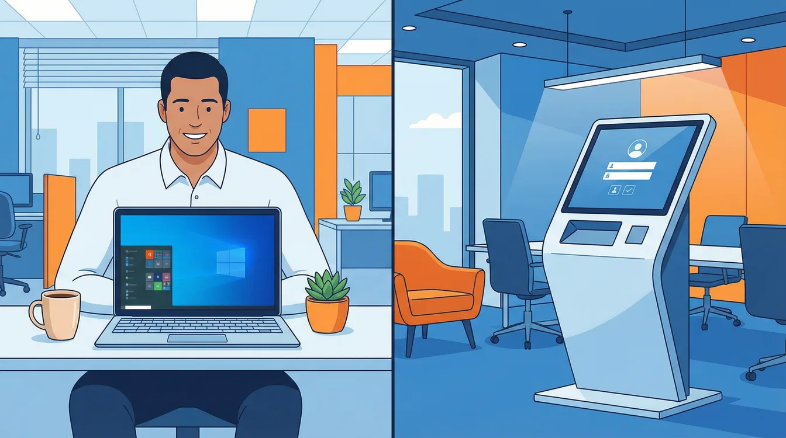

Windows Autopilot deployment replaces manual imaging with zero-touch provisioning — everything an SME needs to get started. Picture a fresh batch of 50 laptops arriving for new hires. Instead of days of unboxing, imaging, and configuring, each device configures itself — directly at the end user's desk, without your IT team ever touching it. Autopilot makes that real by combining Intune, Entra ID, and manufacturer-level hardware registration into a single cloud-driven workflow.
That is the promise of Windows Autopilot. It is not a single piece of software but a cloud-based approach that fundamentally changes how organizations deploy Windows devices. Forget traditional imaging. With Autopilot, new devices ship directly from the manufacturer to the employee. The user unboxes it, connects to the internet, enters their credentials, and watches as the laptop automatically configures itself with all required apps, settings, and security policies. For IT, that means zero effort and full control — simultaneously. Yes, really.
Zero touch Windows deployment is not a buzzword. It is what happens when you stop pretending that manually imaging 50 laptops is a good use of your team's time.
Two Roads to the Same Destination: Autopilot v1 vs. v2
Since its introduction, Autopilot has evolved. Today we stand at an important fork in the road: two variants exist side by side — the classic version (v1) and the new "Device Preparation" (v2). The choice between them is a strategic decision, not just a technical one.
The Proven Classic (Autopilot v1): Maximum Control and Compatibility
How it works: Each device must be pre-registered in your system by uploading its unique "digital fingerprint" — the hardware hash. When the device starts, it checks in with Microsoft, gets recognized, and receives its assigned configuration profile.
When this is your path: Whenever you have a mixed environment of Windows 10 and Windows 11, or need to join devices to an on-premises Active Directory (Hybrid Join). v1 is the Swiss Army knife for complex scenarios and offers the greatest flexibility — including repurposing existing devices. It also supports up to 100 applications during provisioning and advanced customization of the out-of-box experience.
The trade-off: The process requires more administrative overhead since every device must be individually registered. Not exactly thrilling work, but it gets the job done.
The Modern Sprinter (Autopilot v2 — Device Preparation): Radically Simple and Fast
How it works: Pre-registration is completely eliminated. You define a policy for a user group. As soon as a new Windows 11 device belonging to a member of that group is started, the process kicks in automatically. No lists, no hardware hashes, no pre-staging.
When this is your path: When you are running a pure cloud strategy, exclusively on Windows 11 (version 22H2 or later), and want the simplest, fastest, and most scalable solution for large device rollouts. For standard new-hire laptop deployments, this is the gold standard. Near real-time monitoring is also included — a feature v1 still lacks.
The limitation: This path works only with Windows 11 and pure cloud connectivity (Microsoft Entra ID). Hybrid scenarios are excluded, and the maximum number of apps during provisioning is currently 25.
Who Is the Device For? The Two Core Deployment Scenarios

Beyond the choice of technology (v1 or v2), the critical question is: who will use the device? This determines which deployment mode to use.
User-Driven Mode (For the Personal Desk)
This is the standard case. An employee receives their personal device, signs in with their account, and Autopilot ensures that both device-level and user-specific settings and apps are installed. During provisioning, the Enrollment Status Page (ESP) shows progress and can block device use until required apps and policies are installed. Perfect for the 1-to-1 device in the office or home office. Supported by both v1 and v2.
Self-Deploying Mode (For Shared Use)
Imagine a kiosk terminal, a device in a conference room, or a shared workstation. There is no fixed user. In this mode, the device configures itself completely without any user sign-in. It starts, sets itself up, and lands directly on the login screen — ready for anyone with the right permissions. Important: this mode is currently only supported by Autopilot v1.
Your Checklist for the Right Autopilot Strategy
The decision for the right approach depends on your infrastructure and goals. Here is a simple decision guide:
| If you need… | Your solution is… |
|---|---|
| Windows 10 devices or a hybrid environment | Autopilot v1 |
| Kiosk systems or shared devices | Self-Deploying Mode (with v1) |
| A pure Windows 11 cloud environment | Autopilot v2 (Device Preparation) |
| The fastest and simplest process for new hires | User-Driven Mode (with v2) |
| More than 25 apps deployed during provisioning | Autopilot v1 |
| Near real-time deployment monitoring | Autopilot v2 (Device Preparation) |
The Road Ahead
Windows Autopilot is more than just a tool — it is a strategic shift toward modern, efficient device management. It frees your IT team from repetitive tasks and gives back the time to focus on what truly matters: strategic projects that move the business forward.
Ready to leave the setup chaos behind? Start by analyzing your current device landscape and define which of the scenarios described here fits best. That is the first step toward an IT infrastructure that simply works — without the drama, without the cardboard mountain, and without the spilled coffee.
Zero Trust. Zero Drama. Zero Bullshit.
Autopilot handles provisioning, but the devices it deploys still need guardrails. Pair it with Intune enrollment restrictions to keep personal devices out of the management plane, and with Intune app protection policies (MAM) to secure data on mobile devices that fall outside the Autopilot workflow.
Autopilot is one piece of a broader Zero Trust in Microsoft 365 strategy. Want to find out which Autopilot strategy fits your environment? Visit easym365.de.
Frequently Asked Questions
What is Windows Autopilot?
Windows Autopilot is a cloud-based deployment method that configures new Windows devices automatically. Devices ship directly from the manufacturer to the employee, who signs in and watches the device set itself up with apps, settings, and security policies — no IT imaging required. It's the modern alternative to traditional imaging.
What's the difference between Autopilot user-driven and self-deploying mode?
User-driven mode is for personal devices: the employee signs in and receives both device and user settings. Self-deploying mode is for shared devices like kiosks or conference rooms — the device configures itself with no user sign-in. User-driven works in v1 and v2; self-deploying is currently v1 only.
What is the Enrollment Status Page in Autopilot?
The Enrollment Status Page (ESP) shows provisioning progress during Autopilot setup and can block device use until required apps and policies are installed. It ensures a device reaches a known, compliant state before the user starts working.
Autopilot v1 or v2 — which should I use?
Use v1 for Windows 10, hybrid Azure AD join, self-deploying/kiosk scenarios, or more than 25 apps during provisioning. Use v2 (Device Preparation) for a pure Windows 11 cloud environment and the fastest new-hire rollouts with near real-time monitoring.